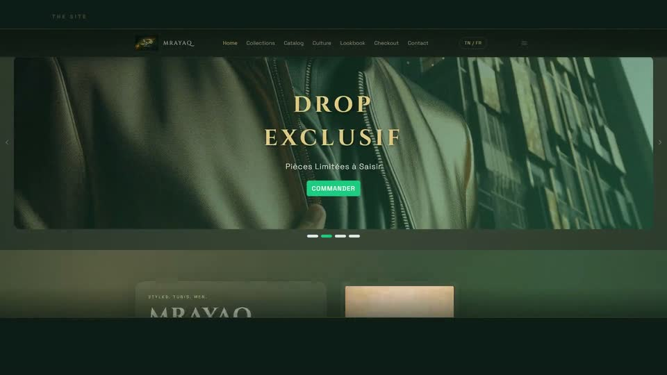
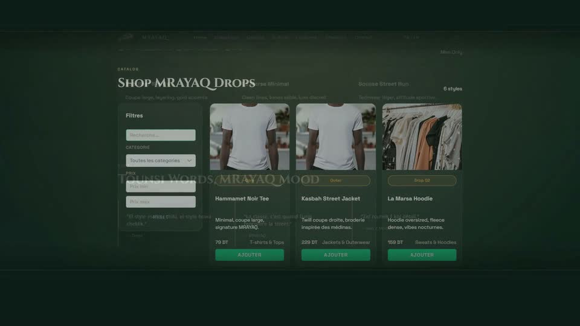
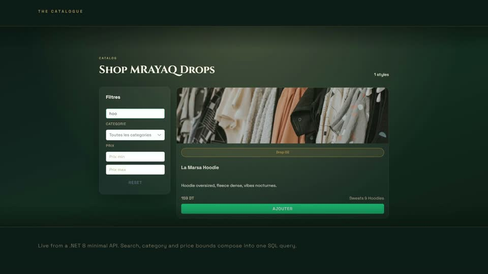

MRAYAQ
A brand site and back office for a Tunisian menswear label, built instead of paying for Shopify — every order line priced from the database, never from the client.
Overview
A brand site and back office for a Tunisian menswear label, built instead of paying for Shopify. Vue 3.5 front end, .NET 8 minimal API over SQL Server: 16 endpoints, 9 behind JWT admin auth, layered into Domain/Application/Infrastructure folders so no endpoint lambda touches the DbContext. Order creation accepts only product IDs and quantities, pricing every line from the database. The identity is the harder half — PrimeVue's Aura preset re-skinned by hand into emerald and gold, over French copy hardcoded in the components, with English labels and two lines of Tunisian derja set in Arabic.
Problem and objectives
A small label needed a storefront and a back office without a monthly platform fee — and without trusting prices sent by the browser.
- A brand site in the label's own voice: French, English and two lines of derja
- A back office behind admin sign-in
- Orders priced on the server, from the database
Architecture
Site and back office
Vue 3.5 · PrimeVue Aura
Re-skinned by hand into emerald and gold.
- Site and back office Vue 3.5 · PrimeVue Aura — Re-skinned by hand into emerald and gold.
- Minimal API .NET 8 · 16 endpoints — Nine of them behind JWT admin auth.
- Application layer Domain / Application / Infrastructure — No endpoint lambda touches the DbContext.
- SQL Server EF Core — Prices live here; an order request carries only IDs and quantities.
Engineering challenges and decisions
- Order request carries no price field; unit price snapshotted from the DB
- Search, category and min/max price filters composed into one EF Core query
- PBKDF2-HMACSHA256, 100,000 iterations, 16-byte per-user salt; JWT clock skew cut to 1 minute
- Aura re-skinned by hand — 8 --p-* token overrides, the rest bespoke; Cinzel and Noto Kufi Arabic
Technologies
My contribution
Personal project, solo build — Vue 3 and TypeScript front end, .NET 8 minimal API, EF Core over SQL Server.
Screens
Stills from the demo film.



Results
- 16
- endpoints, 9 behind JWT admin auth
- 100,000
- PBKDF2-HMACSHA256 iterations, 16-byte per-user salt
- 1
- EF Core query composing search, category and price range